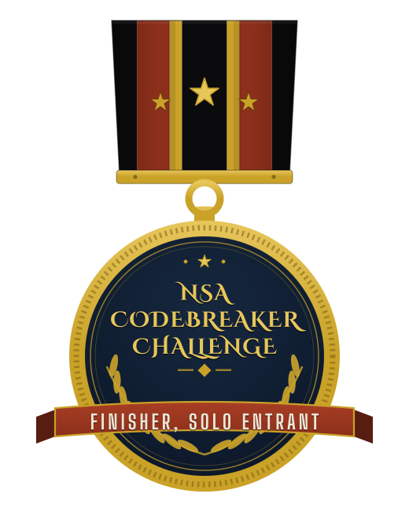
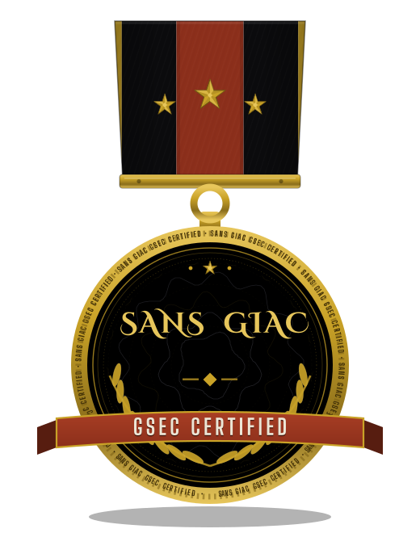
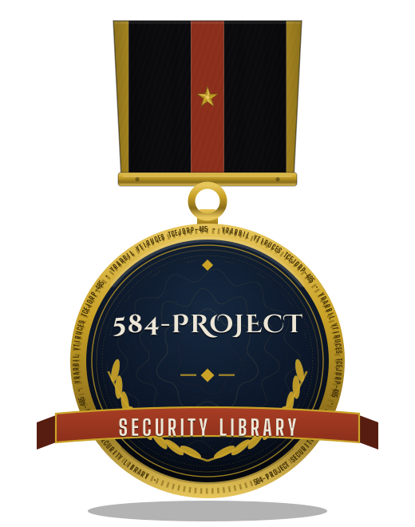

584
PROJECTS IN THE LIBRARY
ShadowGuard-AI is a library of 584 open-source security projects: scanners, analyzers, monitors, and small sharp tools that do one job well. The original library was fully autonomous. I keep it public and documented, because security tooling should be studied, not hoarded.
| crypto-smart-contract-static-analyzer | Static analysis for smart contracts. |
| crypto-signature-analyzer | Signature scheme analysis. |
| kem-interface-cycle-tester | Post-quantum KEM interface cycles, tested end to end. |
| crypto-steganography | Steganography: encoding, hiding, and detection. |
| codeintel-os-command-injection-checker | Command injection checks for code review. |
| vsl-port-banner-grabber | Port scanning and banner grabbing. |
| file-sensitive-data | Finds sensitive data hiding in plain files. |
| crypto-side-channel-simulator | Side-channel behavior, simulated safely. |
| monitor-filechanges | Watches files and reports what changed. |
| crypto-timing-attack-detector | Timing attack detection. |
The full catalogue: github.com/ShadowGuard-AI.
I am Gavin K. I publish as Epsilon0xCell. Everything on this page is part of a public record, and every claim on it can be checked.
I build security tooling, test it against its own documentation, and write down what I find. This library is that habit at scale.


